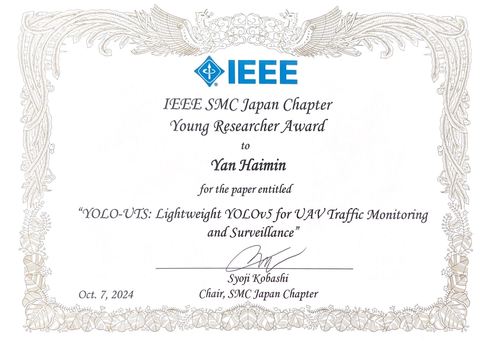

研究実績
国内学会
1. 発表テーマ：ドローンによる駐車場の自動巡回
情報処理学会組込みシステム研究会, 横浜, 2023年11月. 口頭.
2. 発表テーマ：YOLO-UTS：ドローン向けの軽量化YOLOによる交通監視
情報処理学会組込みシステム研究会, 東京, 2024年7月. 口頭.
3. 発表テーマ：Advanced Detector for Small Object Detection in UAV Aerial Imagery
MIRU, 熊木, 2024年8月. ポスター.
4. 発表テーマ：自律飛行ドローンのための高性能かつ軽量な物体検出手法
情報処理学会組込みシステム研究会, 横浜, 2024年11月. 口頭.
国際学会
1. 発表テーマ：Automatic Drone Patrol of Parking Lots Using YOLO and MiDaS Neural Networks
Itc-cscc, 沖縄, 2024年7月. 口頭.
2. 発表テーマ：YOLO-UTS: Lightweight YOLOv5 for UAV Traffic Monitoring and Surveillance(受賞あり)
IEEE International Conference on Systems, Man, and Cybernetics, マレーシア, 2024年10月. 口頭.
3. 発表テーマ：YOLO-ELD: Efficient and Lightweight Detection for UAV Aerial Imagery
IEEE International Conference on Systems, Man, and Cybernetics, マレーシア, 2024年10月. 口頭.
ジャーナル
1. 発表テーマ：ST-YOLO: An Enhanced Detector for Small Objects in UAV Aerial Imagery
IEEE Internet of Things Journal （審査中）
受賞
1. IEEE SMC Young Researcher Award
